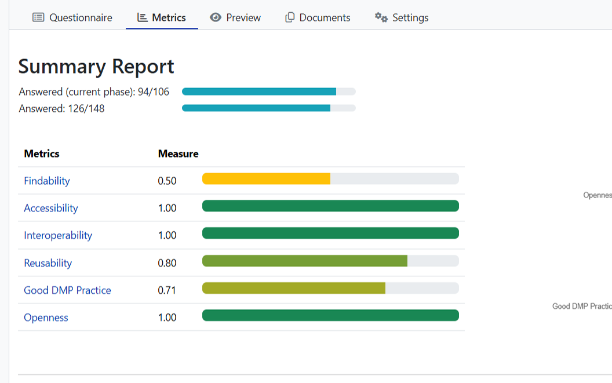

Appendix A — Tips
The questions in red/green coloured font are mandatory, the questions in grey coloured font are optional. Further, this is work still in progress, for the moment, you can ignore the completion of these optional questions if very confusing. Please get in touch with the WP7 DMP Troubleshooters or Data Champions/ Data Liaisons if you want assistance.
Filling optional questions will enrich the DMP. Example, the question: “Link to a project proposal or another description of the methods used in the project” can be left blank or free text inserted (even it returns an error message – “This is not a valid URL!”)
To track DMP progress along the project1, create named versions (Figures 35 and 36) whenever phase is changed or significant updates have been made to the questionnaire. Create a new document (see figures 20 to 24) for how to create a new document, make sure to use an appropriate name reflecting the version, use the preferable download format (e.g. PDF/MS word) of the document to download the updated DMP document (related to the phase or version with significant updates).
For the question on Affiliation: to get the name of the institution in the dropdown, full name of the institution might need to be typed.
Response to the question: “To execute the DMP, is additional specialist expertise required?” should be a “yes” question as FAIR data and Data Management needs training and expertise.
The “Add” button lets you include additional responses to a particular question. For example, in the screenshot (figure 40) below, additional policy and process documents links can be provided.
The Manager and Deputy Manager can first fill the template with the knowledge they have about partners, institutional affiliation, etc. Researchers are needed to fill information regarding dataset generated/reused, equipment details, etc.
You can check the FAIR metrics of the DMP by clicking on the “Metrics” tab.

Figure A.2: Checking the progress of the DMP. Each quarterly or six-monthly updates by project members to the DMP (based on data generation, etc.), when saved as instances of document, can indicate the progress and regular tracking of PARC KPIs. The DMP has seven chapters, the number next to the chapter indicates the number of mandatory questions that remain to be answered (this changes based on what answers you provide, for example, a “no” answer to a specific question, would reduce the number of mandatory questions, hence the number shouldn’t be treated as final)
Administrative information
Re-using data
Creating and collecting data
Processing data
Interpreting data
Preserving data
Giving access to data
A.1 Planned work in the knowledge model
You may find, in some instances, dataset and database are written as “Data set”, “Data base”, “data-set” and cannot as “can not”, and worldwide as “world-wide”. These will be corrected.
Some mandatory questions show as optional, these will be revisited.
Idea is to create three domain specific project level templates (after the few planned hands-on sessions) – toxicity, HBM, Environmental Monitoring – that will be created from the general PARC project-level template, so that everyone uses domain project templates to create their DMPs.
A.2 Project roles
The set of eight roles involved in the development of PARC Project-level DMPs are shown below (integrated in the DMP tool).
- Contact Person (for the DMP): This is generally the person who had overall responsibility for developing the DMP, and as such has both technical knowledge and domain-specific knowledge. They are the person who can be contacted to acquire knowledge about the data resource or for acquisition of the resource
Note: The DMP contact person and the contact person for project level data, i.e., the project leader (PL), can be same person in the case of PARC projects.
Editor: Editor it is the person(s) responsible for having oversight of the publication of the DMP, editing/updating the DMP if the project manager delegates this responsibility, and for reviewing or updating the DMP (which includes WP7 or PARC Data Liaisons) on the behest of the Project Manager, etc.
Project Leader: The named person(s) who conceptualised the project or activity, who was responsible for drafting the project description, and who is responsible for the successful project delivery.
Note: In the case of some PARC projects, project leader and project manager / deputy manager could be the same person
Study Lead: The person responsible for supervising/managing a sub-unit of a PARC-project.
PARC - Data Champion: The role of Data Champion can partially overlap with the role description of Data Manager (see definition above for Data Manager) in the context of making PARC data FAIR. The Data Champion is appointed by each project or activity within the various work packages of PARC to “champion” the need for proactive data management and feeds issues that arise in the data management effort back to WP7. The role involves undertaking the (i) data management activities to annotate (produce metadata), review or enhance metadata, (ii) checking whether the submitted dataset is complete, with all files and components as described by submitter, and (iii) maintaining research data (including software code, where this is necessary for interpreting the data itself) for initial use and later re-use.
FAIR data champions are scientific experts who are proponents for FAIR data. The Champions can work as FAIR ambassadors, sharing FAIR implementation stories, enhancing synergies, and contributing to training activities and webinars.
PARC - Data Liaison: Data Liaisons from within WP7 have overarching data management knowledge (and receive additional training) and preferably domain specific knowledge that are appointed to “support” the PARC projects and Data Champions in developing their data management plans. The Data Liaisons are responsible for co-creating metadata schemas and harmonised templates for metadata reporting and providing support to the investigators, as needed for the specific project.
Project Manager: The person with administrative responsibility for planning, managing, and monitoring progress within available resources while adhering to project commitments, and resolving issues arising in a project, but typically not directly involved in the research or research data lifecycle.
Data Protection Officer: The tasks description of a DPO is per Article 39 of General Data Protection Regulation (GDPR). One example of important tasks is outlined in https://gdpr-info.eu/art-39-gdpr/. DPO is especially important for PARC WP4, where most of the Human Biomonitoring activities are housed.
At least three phases of DMP should be in all projects 1) before completing the DMP 2) before finishing the project 3) after finishing the project (and before finalising the report) which is the final update of the DMP confirming all datasets have been described.↩︎